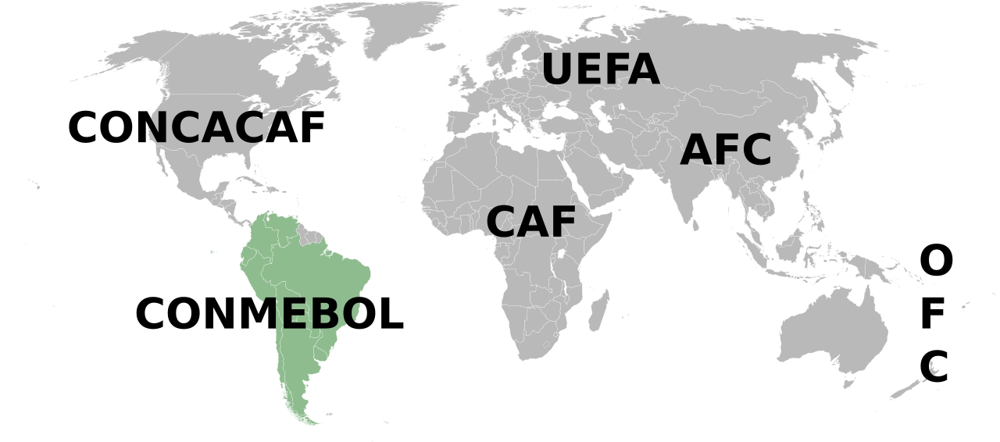
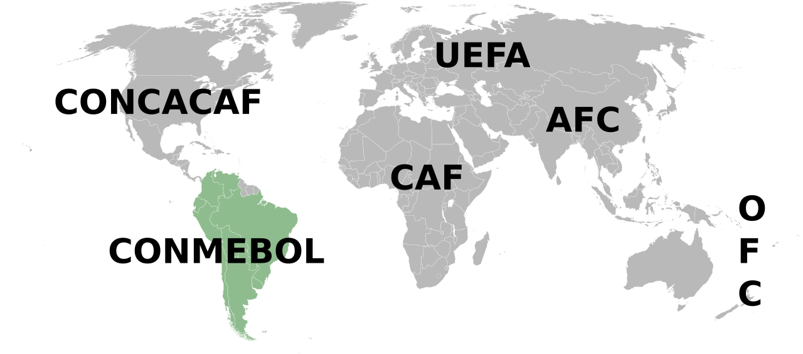
Bem-vindo ao planeta do futebol!
Descubra os clubes mais famosos do mundo, suas histórias e grandes conquistas.
FIFA - Federação Internacional de Futebol

A FIFA (Fédération Internationale de Football Association) é o órgão máximo do futebol mundial. Fundada em 1904, ela é responsável por organizar competições internacionais como a Copa do Mundo e por coordenar as confederações continentais.
.
Veja abaixo as confederações que fazem parte da FIFA:
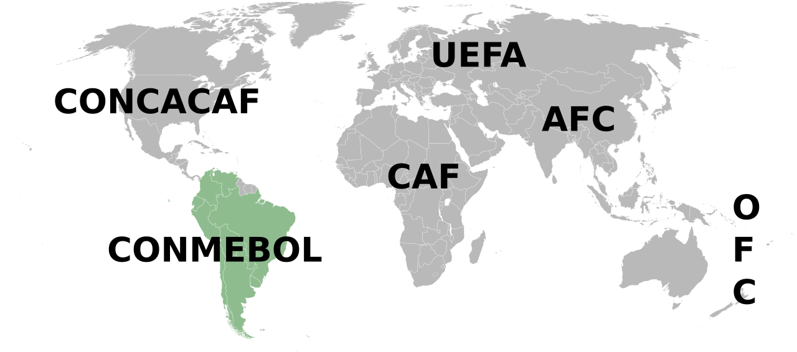
 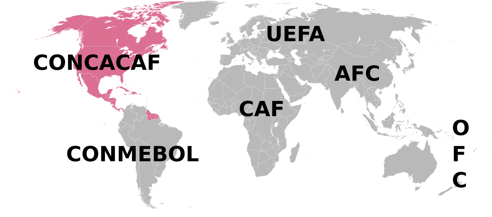
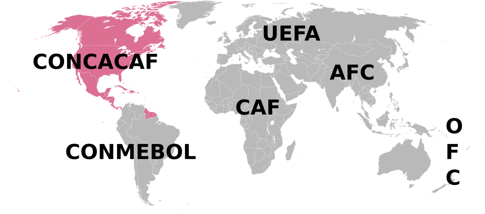
CONCACAF (Am. do Norte, Central e Caribe)
Acessar site 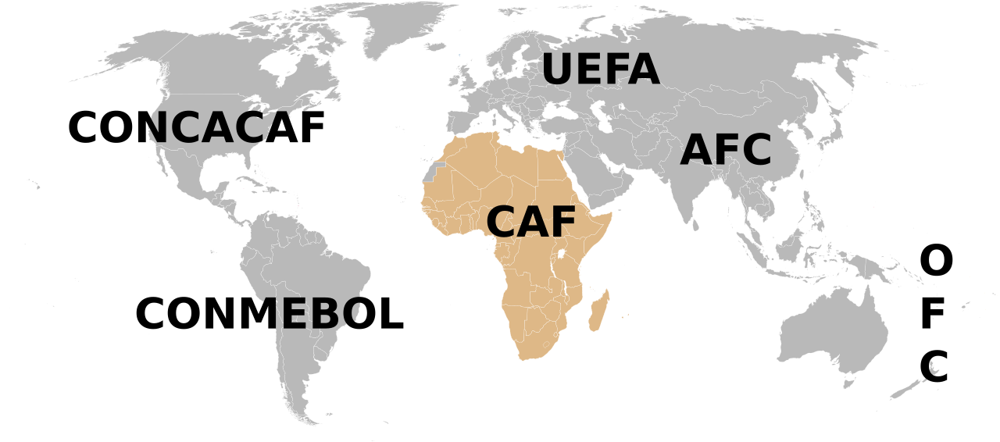
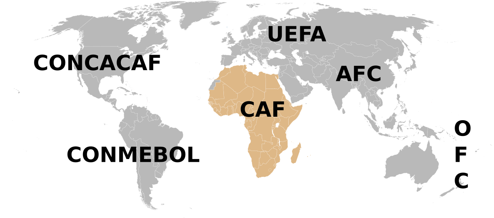
CAF (África)
Acessar site 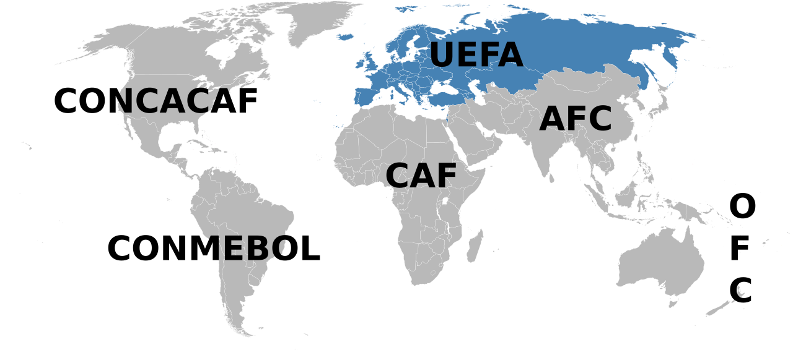
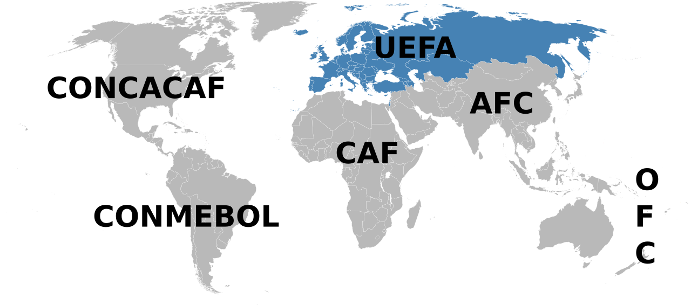
UEFA (Europa)
Acessar site 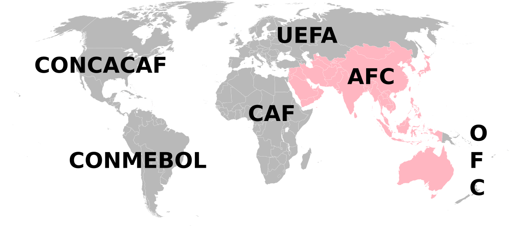
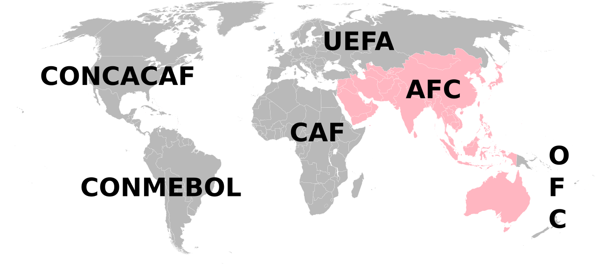
AFC (Ásia)
Acessar site 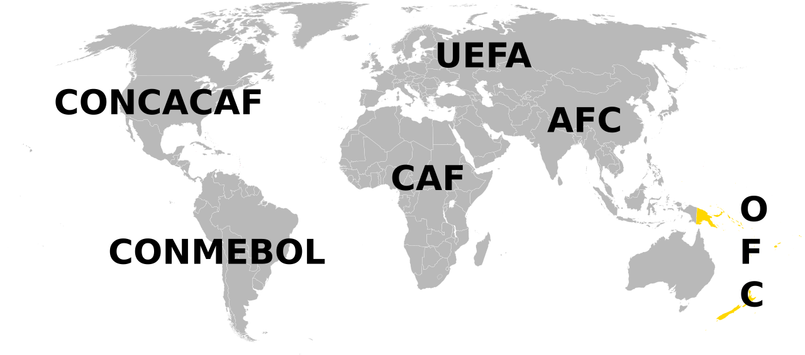
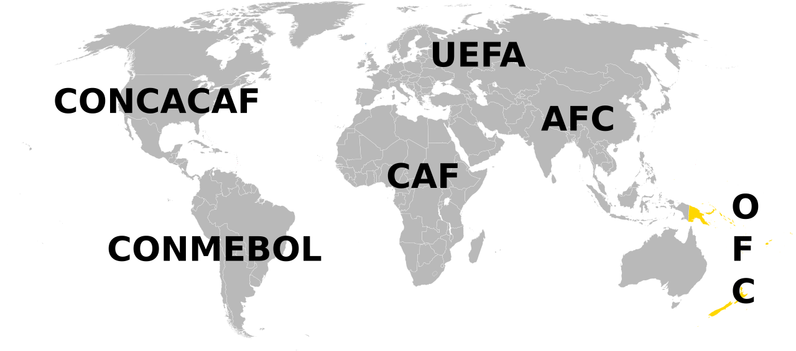